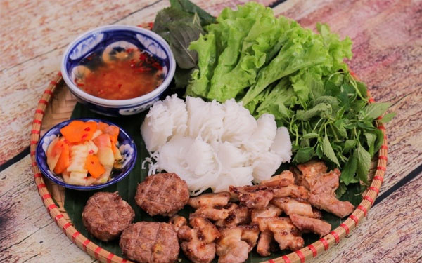
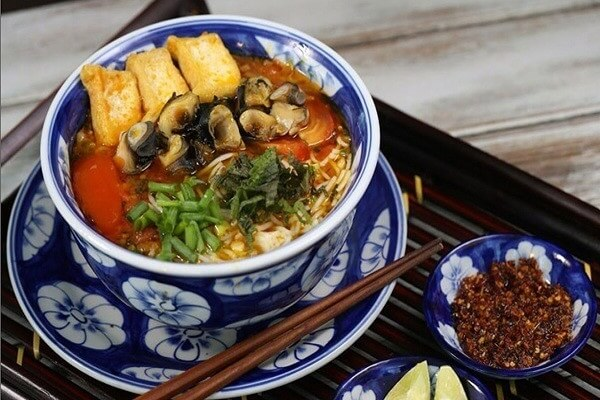
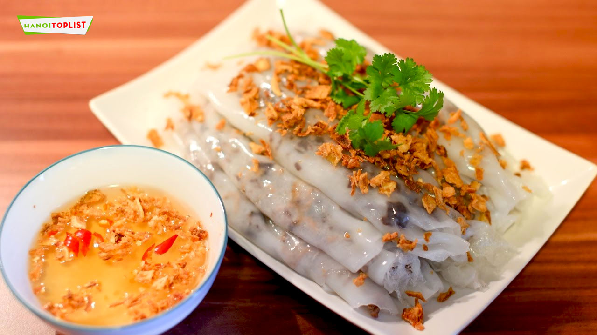

Toumie
Vietnamese Culture
Vietnamese Culture is one of the oldest culture in the World which has undergone changes almost four
thousands of years. Some people said Vietnam culture has influence from Chinese culture but there is
a
study shows Culture of Vietnam has its own characters and has parallel development to Chinese
culture.
Along the history of Vietnam from the Dynasty of Trieu, Dinh, Ly, Tran & Le. In the pretty much same
time with Chinese dynasty of Han, Duong, Tong, Nguyen.
According to scholarly sources, the Culture of Vietnam originated from ancient Nam Viet, an ancient
kingdom of Giao Chi people which shared characteristics of Han Chinese cultures and the ancient Dong
Son
Culture, considered one of the most important progenitors of its indigenous culture, during the
Bronze
Age. Nam Viet was occupied by Northern evaders in 111 BC, leading to the first Chinese domination of
Vietnam lasting over thousand years that propelled Chinese influences onto Vietnamese culture in
terms
of Confucian philosophy governance, and the arts.
Following independence from Chinese in the 10th century; successive Vietnamese imperial dynasties
flourished as the country embarked on a southward expansion that annexed territories of the Champa
and
Khmer civilizations; which resulted in regional variances of modern-day culture of Vietnam. During
the
French colonial period in the mid-19th century; Vietnamese culture absorbed European influences
including architecture; Catholicism, and the adoption of the Latin alphabet, which created the new
official writing system that replaced the previous Chinese characters and Nom scripts.
After French left, Vietnamese culture was characterized by government-controlled propaganda, which
emphasized the importance of cultural exchanges with fellow communist nations such as the Soviet
Union,
China, and Cuba. Following the reform in 1986, Vietnam has continuously absorbed various influences
from
Asian, European, and American cultures. Part of the East Asian cultural sphere, Vietnamese culture
has
certain characteristic features including ancestor veneration and worship, respect for community and
family values, and manual labor religious belief. Important cultural symbols include 4 holy animals:
Dragons, Turtles, Phoenix, Unicorn. The national flower is lotuses and the most popular plant in
Vietnam
is bamboo.
1. Ethnic groups in Vietnam
Vietnam is a multiethnic country with over fifty distinct groups (54 Totally). Each of them has its
own
language, lifestyle, and cultural heritage. Many of the local ethnic groups residing in mountain
areas
are known collectively in the West as Montagnard or Degar.
The largest ethnic groups are: Kinh (Viet) 85.7%, Tay 1.9%, Tai Ethnic 1.8%, Mường 1.5%, Khmer Krom
1.5%, Hmong 1.2%, Nung 1.1%, Hoa 1%, with all others comprising the remaining 4.3% (2009 census).
The
Vietnamese has term for ethnic group (literally “minority people”). One distinctive feature of
highland
ethnic minority groups in Vietnam is that they are colorfully attired whether at home, in the farm,
traveling or in their home town.
Many ethnic groups elsewhere such as southern part of Vietnam, Cambodia, Laos, Myanmar, China, Papua
New
Guinea, and many other countries do not wear attractive clothes while engaged in their day-to-day
activities. The clothing of one group is quite different from that of other groups and adds color to
the
social landscape. When you travel in Vietnam, you will meet and even talk to many of them. In the
trip t
Sapa, you may see dozens of them or some province as Lai Chau has 20 ethnic groups ( more than 3
hundreds thousand habitats). Dak Lak province has most in Vietnam with 47 ethnic groups.
pictures of some ethnic groups in vietnam
2. Social Beliefs & Customs in Vietnam
Family is very strong in Vietnam. Family and clan (dòng họ) are valued over individualism. Clan is
the
most important social unit in the country and each clan features a patriarch heading the clan and a
clan
altar. Even today, in some parts of the country, the tradition of clan members living together in
longhouses is quite prevalent. It is also not uncommon to see three to four generations of a family
living together in the same house. Members of a clan are related by blood and often name their
villages
based on their clan names. Death commemorations of clan members are usually attended by all members
of
the clan and villagers.
Weddings in Vietnam earlier was arranged mainly by parents and people were married very young.
However,
things have changed so much in recent years since Vietnam Open the door to the World and tourism
pick up
in early of 90. Vietnamese youth enjoy greater freedom of choosing the time of their marriage and
their
partner. Weddings are still mostly held in the traditional manner with elaborate rituals and
ceremonies.
The date for Wedding was carefully selected by Feng Shui master or most respected man in the Clan.
The traditional funeral ceremony in Vietnam is also quite elaborate and long-stretched. The body of
the
dead person is cleaned with fragrant water and dressed carefully in the special clothes. A lot of
mourning following and depends on each tribe and location, they have the slightly different
ceremony.
Later the body will be burying, the most popular method. Recently, some area, people choose
cremation
instead of burying. Only 1 case of remains in frozen condition and several cases of Monks body was
kept
inside the statues…
According to Confucian, men and women can not touch hand unless they are husband and wife so
Vietnamese
people don’t hug when meeting. They say ” Xin Chao” or handshake between men.
People in the city talk gently and quietly and people come from the countryside or from the sea
talk
pretty loud. They work on the farm or ocean and they got to talk even louder than the wind or the
waves.
family photo in Vietnam
3. Vietnamese Cuisine
Vietnamese food is fresh and healthy and getting more and more popular all over the World. It exhibits great diversity but can be classified into three primary categories by locations: the north, south, and central regions of the country. Many types of noodles and noodle soups and all type of spring rolls are popular here. Less use of oil and greater use of fresh vegetables is preferred. Soy sauce, fish sauce, mint, and basil are popular ingredients. Rice is the main food and eaten in 3 meals a day. The flavors of Vietnamese food range from spicy and sour to sweet. The Noodle Soup originating in North Vietnam is a noted Vietnamese dish and features rice noodles with beef, chicken, fish, sea food…. soup and scallions or bean sprouts as accompaniments. There is vegetarian noodle soup too.



Some famous dishes in Vietnam
4. Religion and philosophy of Vietnam
Most of Vietnamese people worshiping their ancestors and believe in animism. In the ID most of Vietnamese (about 90%), the line: Religion: None. In reality ,religion in Vietnam has historically been largely defined by a mix of Buddhism, Confucianism, and Taoism, known in Vietnamese as the Tam Giao (“triple religion”).Catholicism is also practiced in modern Vietnam. Ancestor worship is common in Vietnamese culture. Most Vietnamese, regardless of religious denomination, practice ancestor worship and have an ancestor altar at their home or business, a testament to the emphasis Vietnamese culture places on filial piety
ho phu pagoda
St. Joseph's Cathedral, Hanoi
5. Vietnamese Arts & Literature
Literature in Vietnam has greatly evolved over the years from romanticism to realism. Two aspects of
the
literature in the country are the folk literature and the written literature both of which developed
almost at the same time. Folk literature features fairytales, folk legends, humorous stories, and
epic
poems. Written literature was previously written in the Cham and Nom characters and focused on
poetry
and prose. Now, it is mostly written in the National Language and includes short stories, dramas,
novels, etc.
Vietnamese art is mainly influenced by Buddhism, Taoism, and Confucianism. However, more recently,
the
Cham and French influence have also been reflected in the art presentations. Silk painting is
popular in
Vietnam and involves the liberal use of colors. Calligraphy is also a much-respected art form and
often,
during festivals like the Lunar New Year. On the third day of new year people would visit a village
teacher or an erudite scholar to obtain calligraphy hangings for their homes. Vietnamese wood-block
prints are also quite popular. Water puppetry and several forms of theaters represent other
performing
art forms in Vietnam.
nam dat que huong (1990)
by Phạm Công Thành.
ket nap dang o dien bien phu(1965)
by nguyễn sáng
6. Festivals of Vietnam
Vietnam has many festivals. In Vietnamese Festival is Le Hoi. It includes 2 parts Le: Ceremony + Hoi:
Game & fun.
Festivals including both traditional ones and those adopted from other cultures are celebrated
in
the country with great pomp and glory. Here is the top 10 festivals in Vietnam:
1 -TET Nguyen Dan – TET holidays all over the country
2- Hung King Holidays in March 10th ( lunar calendar)- Phu Tho province
3- Saint Giong Festival – In March outside Hanoi in Soc Son district
4- Ka Te Festival – In Champa community in Ninh Thuan Province
5- Perfume pagoda festival – Outside Hanoi
6- Dong Da Festival in Hanoi
7- Cau Ngu Festival in Hue in December
8- Hội đua voi – Elephant racing in Don village – Dak Lak province
9- Ba Chua Xu Festival – In Chau Doc city, An Giang province in April
10- Cam Muong Festival in Lai Chau province.
elephants racing Festival in tay Nguyen
Bai Dinh Pagoda Festival in Ninh Binh